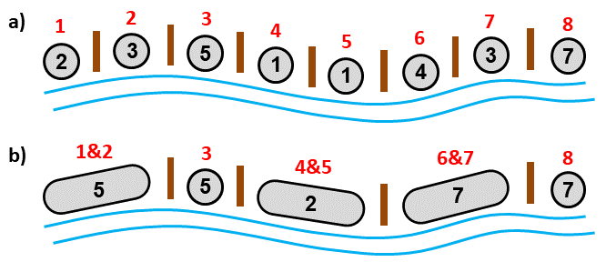

Výkup totemů v africkém pralese
Cestovatel Kamil Holub navštíví domorodý kmen v africkém pralese. Příslušníci kmene žijí v chatrčích podél dlouhé řeky.
Několik chatrčí tvoří vesnici, přičemž každé dvě sousední vesnice jsou od sebe oddělené totemem postaveným dávnými předky.
Totemy jsou unikátní a pan Holub má zájem je odkoupit. Je přesvědčen, že každý z nich prodá do soukromých sbírek za cenu P.
Od domorodců se dozvídá, že totemy mezi dvojicemi sousedních vesnic stojí proto, aby zajišťovaly klid zbraní a dobré sousedské vztahy
mezi obyvateli. Domorodci ale odkazy předků příliš nectí a jsou ochotni o prodeji totemů jednat. Pokud je počet bojovníků
ve dvou sousedních vesnicích stejný, nabízejí dokonce zdarma totem, který vesnice odděluje,
protože jsou přesvědčeni, že rovnováha sil dobré soudsedské vztahy zajišťuje. Je-li však v jedné vesnici počet bojovníků B1
a ve druhé B2, kde B1 ≠ B2, pak mají větší obavy a požadují za totem zaplatit
částku L za každého bojovníka, o kterého je jedna z vesnic silnější než ta druhá, celkem tedy částku
L × |B1 − B2|.
Když pan Holub jeden z totemů získá, zmizí zároveň hranice mezi dvěma vesnicemi a z těchto dvou sousedních vesnic se tudíž stane jedna
(domorodci mají silně zafixováno, že hranice vesnic vymezují právě totemy). Pan Holub může pokračovat v jednání o odkupu dalších
totemů, musí však vzít v úvahu, že počet vesnic a počet bojovníků ve vesnicích se s každým uzavřeným obchodem změní. Otázkou je,
kolik totemů a v jakém pořadí má postupně vykoupit, aby maximalizoval zisk.
Úloha
Jsou dány počty bojovníků v jednotlivých vesnicích podél řeky a také částky P a L. Určete, jakého maximálního zisku může pan Holub dosáhnout, pokud některé z totemů od domorodců vykoupí a poté je prodá do soukromých sbírek při ceně P za každý totem. Výkup totemů probíhá sekvenčně. Každý jednotlivý obchod se musí nejprve provést a daný totem se odebere, až poté je možné jednat s domorodci o odkupu dalšího totemu. Na jiný formát obchodu domorodci nepřistoupí.
|

Obrázek 1. a) Příklad osmi vesnic (šedá kolečka) podél řeky a sedmi totemů vymezujících jejich hranice (hnědé čáry). Číslo uvnitř kolečka reprezentuje počet bojovníků v dané vesnici. Červená čísla jsou pořadová čísla vesnic. b) Situace po vykoupení 3 totemů, kdy se počet vesnic zredukuje na 5. Předpokládejme, že P = L = 1. Vykoupíme nejprve například totem mezi vesnicemi s pořadovými čísly 1 a 2. Zaplatíme částku 1 × |2 − 3| = 1 a vesnice 1 a 2 se sloučí do jedné, označené 1&2. Tato vesnice má 2 + 3 = 5 bojovníků. Poté vykoupíme totem mezi vesnicemi 4 a 5 (zaplatíme 0) a mezi vesnicemi 6 a 7 (zaplatíme 1). Maximálního zisku dosáhneme, pokud budeme pokračovat a vykoupíme ještě 2 totemy, nyní mezi vesnicemi 1&2 a 3, a mezi vesnicemi 6&7 a 8. V obou případech nic neplatíme. Protože jsme domorodcům zaplatili celkem částku 2 a všech 5 totemů prodáme za částku 5, je celkový zisk 3. Vyššího zisku v daném případě dosáhnout nelze. |
Vstup
Vstup sestává ze dvou řádků.
První řádek vstupu obsahuje tři celá kladná čísla N, P, L oddělená mezerami.
Číslo N je počet domorodých vesnic, číslo P je částka, za kterou lze totem prodat, a L je částka, kterou domorodci při
prodeji totemů požadují za každého rozdílového bojovníka.
Druhý řádek vstupu obsahuje N celých kladných čísel oddělených mezerami.
Tato čísla reprezentují počet bojovníků v jednotlivých vesnicích a jsou dána v pořadí, které odpovídá pořadí vesnic podél řeky.
Platí 1 ≤ N ≤ 800, 1 ≤ P, L ≤ 10.
Počet bojovníků v každé z vesnic je maximálně 20 (platí pro počáteční stav, po sloučení několika vesnic může být tato mez překonána).
Výstup
Výstup obsahuje jeden řádek s jedním celým číslem. Toto číslo je rovno maximálnímu zisku, kterého může pan Holub docílit nákupem a následným prodejem
totemů.
Je zaručeno, že maximální zisk je pro každý vstup vždy kladné číslo.
Příklad 1
Vstup8 1 1 2 3 5 1 1 4 3 7Výstup
3Data a řešení Příkladu 1 jsou znázorněna na Obrázku 1.
Příklad 2
Vstup6 3 4 1 1 3 2 2 1Výstup
6
Příklad 3
Vstup20 2 3 5 3 4 8 3 6 6 8 8 6 3 5 1 4 6 3 1 2 3 4Výstup
7
Veřejná data
Veřejná data k úloze jsou k dispozici. Veřejná data jsou uložena také v odevzdávacím systému a při
každém odevzdání/spuštění úlohy dostává řešitel kompletní výstup na stdout a stderr ze svého programu
pro každý soubor veřejných dat.
Veřejná data